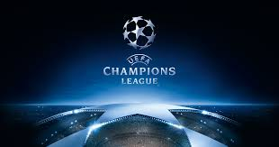

UEFA Champions League

History
Main article: European Cup and UEFA Champions League history
The first pan-European tournament was the Challenge Cup, a competition between clubs in the Austro-Hungarian Empire. The Mitropa Cup, a competition modelled after the Challenge Cup, was created in 1927, an idea of Austrian Hugo Meisl, and played between Central European clubs. In 1930, the Coupe des Nations (French: Nations Cup), the first attempt to create a cup for national champion clubs of Europe, was played and organised by Swiss club Servette.Held in Geneva, it brought together ten champions from across the continent. The tournament was won by Újpest of Hungary. Latin European nations came together to form the Latin Cup in 1949. After receiving reports from his journalists over the highly successful Campeonato Sudamericano de Campeones of 1948, Gabriel Hanot, editor of L'Équipe, began proposing the creation of a continent-wide tournament. After Stan Cullis declared Wolverhampton Wanderers "Champions of the World" following a successful run of friendlies in the 1950s, in particular a 3–2 friendly victory against Budapest Honvéd, Hanot finally managed to convince UEFA to put into practice such a tournament. It was conceived in Paris in 1955 as the European Champion Clubs' Cup.
Anthem
Main article: UEFA Champions League Anthem
The UEFA Champions League anthem, officially titled simply as "Champions League", was written by Tony Britten, and is an adaptation of George Frideric Handel's Zadok the Priest (one of his Coronation Anthems).[39][40] UEFA commissioned Britten in 1992 to arrange an anthem, and the piece was performed by London's Royal Philharmonic Orchestra and sung by the Academy of St. Martin in the Fields.[39] The chorus contains the three official languages used by UEFA: English, German, and French. The anthem's chorus is played before each UEFA Champions League game, as well as at the beginning and end of television broadcasts of the matches. The complete anthem is about three minutes long, and has two short verses and the chorus. For the 2009 UEFA Champions League Final in Rome, tenor Andrea Bocelli sang backing lyrics to the Champions League anthem, whilst similarly Juan Diego Flórez provided the tenor for the 2010 UEFA Champions League Final. Girl band All Angels performed at the 2011 UEFA Champions League Final. Jonas Kaufmann provided the tenor for 2012 UEFA Champions League Final, whilst David Garrett performed with his violin. The anthem has never been released commercially in its original version.